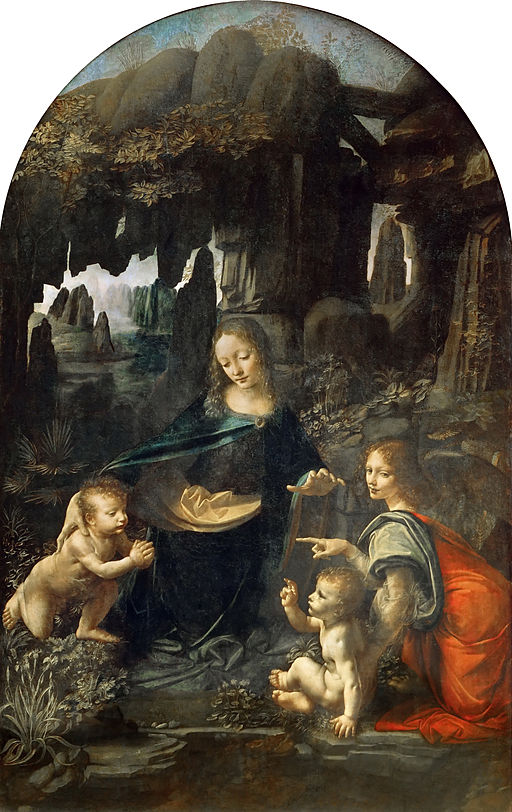

<head>
<meta charset="UTF-8" />
<meta name="keywords" content="drawing, painting" />
<meta name="description" content="drawings by Sunjy" />
<title>Sunjy</title>
<link rel="shortcut icon" type="image/x-icon" href="../../mImages/mCommon/favicon.ico" media="screen" />
<link rel="stylesheet" type="text/css" href="../../mCsses/mCommon/mCssA.css" />
<link rel="stylesheet" type="text/css" href="../../mCsses/mCommon/mCssB.css" />
<link rel="stylesheet" type="text/css" href="../../mCsses/mCommon/mCssC.css" />
<link rel="stylesheet" type="text/css" href="../../mCsses/mCommon/mCssD.css" />
<link rel="stylesheet" type="text/css" href="../../mCsses/mContent/mCssA.css" />
<link rel="stylesheet" type="text/css" href="../../mCsses/mContent/mCssB.css" />
<link rel="stylesheet" type="text/css" href="../../mCsses/mContent/mCssC.css" />
<link rel="stylesheet" type="text/css" href="../../mCsses/mContent/mCssD.css" />
</head>
<script type="text/javascript" src="../../mScripts/mContent/mContentAA.js" /></script>
<script type="text/javascript" src="../../mScripts/mContent/mContentAB.js" /></script>
<script type="text/javascript" src="../../mScripts/mContent/mContentAC.js" /></script>
<script type="text/javascript" src="../../mScripts/mContent/mContentAD.js" /></script>
<script type="text/javascript"></script> 
<script type="text/javascript">
document.write('<div class="mImgAbsolute"></div>');
/*
document.write('<p class="mFontSizeBColor" />From a white paper...</p>');
document.write('<table class="center"><tr><td>');
document.write('');
document.write('</td></tr></table>');
*/
</script>


<script type="text/javascript">
document.write('<p class="mFontSizeBColor" />Virgin of the Rocks</p>');
document.write('<p class="mFontSizeSColor" />By Leonardo da Vinci. “Virgin of the Rocks” depicts the Madonna and Child Jesus with the infant John the Baptist and an angel in a rocky setting, which provides the painting with its unusual name. This painting is in the Louvre and is one of two versions of this picture, which have the same name and similar composition but with several differences in the detail. A later version of the two paintings is in the National Gallery of London.<br><br>The composition shows a grouping of four figures, the Virgin Mary, the Christ child, the infant John the Baptist, and an angel arranged into a triangular formation.  The setting is a background of rocks and a distant landscape of mountains and water. Mary occupies the apex of the pyramidal figure group, stretching one hand to include John and raising the other above the head of the Christ child. John is kneeling and looking towards the Christ child with his hands together in an attitude of prayer. The Christ child is supported by the angel and is raising his right hand in a sign of Benediction towards the kneeling John.<br><br>The subject of both paintings is the adoration of the Christ child by the infant John the Baptist. The critical differences in the two pictures are in the gaze and right hand of the angel. There are also differences in the colors, the lighting, and the flora. In this painting, the angel is looking at Jesus and pointing at John, in the National Gallery version, the angel is looking at John. This story is not in the Bible, but it became part of a tradition of medieval stories about encounters between the young Jesus and John. Leonardo was familiar with legends of Saint John the Baptist, which was popular in his native Florence, where he was the patron saint. Other famous artists who have portrayed this story in art include Raphael and Michelangelo.<br><br>This painting was part of a sculpted altar commissioned in the 1480s for a chapel attached to the church of Saint Francesco Grande in Milan. The final execution of the commission was prolonged as the first version of this painting was not completed until 1486, and it was then sent to France, and today is on display in the Louvre. Leonardo then painted a replacement for the chapel in 1508, which is this painting. Eighty years later, the altarpiece was removed from the chapel, which was demolished, and the artwork eventually found its way into the National Gallery Collection.</p>');
document.write('<table class="center" /><tr><td>');
document.write('<br>The composition shows a grouping of four figures, the Virgin Mary, the Christ child, the infant John the Baptist, and an angel arranged into a triangular formation.  The setting is a background of rocks and a distant landscape of mountains and water. Mary occupies the apex of the pyramidal figure group, stretching one hand to include John and raising the other above the head of the Christ child. John is kneeling and looking towards the Christ child with his hands together in an attitude of prayer. The Christ child is supported by the angel and is raising his right hand in a sign of Benediction towards the kneeling John.<br><br>The subject of both paintings is the adoration of the Christ child by the infant John the Baptist. The critical differences in the two pictures are in the gaze and right hand of the angel. There are also differences in the colors, the lighting, and the flora. In this painting, the angel is looking at Jesus and pointing at John, in the National Gallery version, the angel is looking at John. This story is not in the Bible, but it became part of a tradition of medieval stories about encounters between the young Jesus and John. Leonardo was familiar with legends of Saint John the Baptist, which was popular in his native Florence, where he was the patron saint. Other famous artists who have portrayed this story in art include Raphael and Michelangelo.<br><br>This painting was part of a sculpted altar commissioned in the 1480s for a chapel attached to the church of Saint Francesco Grande in Milan. The final execution of the commission was prolonged as the first version of this painting was not completed until 1486, and it was then sent to France, and today is on display in the Louvre. Leonardo then painted a replacement for the chapel in 1508, which is this painting. Eighty years later, the altarpiece was removed from the chapel, which was demolished, and the artwork eventually found its way into the National Gallery Collection." />');
document.write('</td></tr></table>');
</script>


